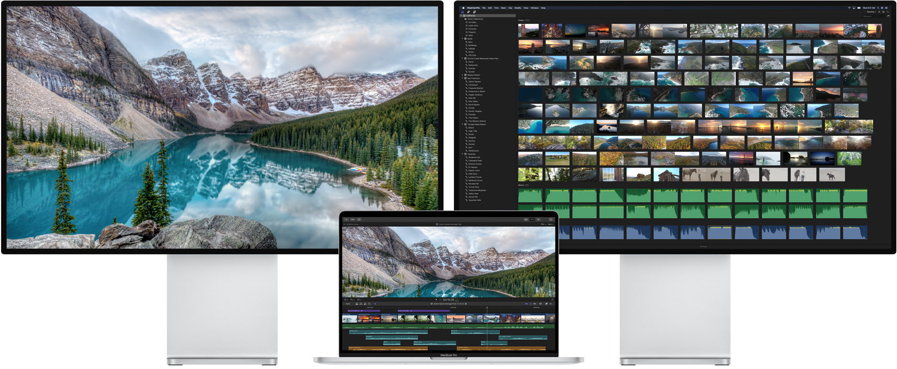

MacBook Pro
The best for the brightest
Designed for those who defy limits and change the world, the new MacBook Pro is by far the most powerful notebook we’ve ever made. With an immersive 16-inch Retina display, superfast processors, next-generation graphics, the largest battery capacity ever in a MacBook Pro, a new Magic Keyboard, and massive storage, it’s the ultimate pro notebook for the ultimate user.
Watch the film
Check back later for availability.
16-inch Retina display
for an immersive viewing experience.
Up to 8TB SSD storage
— the highest capacity in any notebook.
AMD Radeon Pro 5000M
for fast rendering and seamless playback.
Up to 8-core processor
to power through intensive workloads.
Up to 64GB of memory
for editing large files and smooth multitasking.
Six-speaker sound system
for dramatic sound and superclean recordings.
Retina Display
A big, beautiful workspace. For doing big, beautiful work.
Chris Burkard
Adventure Photographer
Boundaries are meant to be pushed.
Chris Burkard
The new MacBook Pro features a stunning
16-inch Retina display
— the largest Retina display ever in a Mac notebook. It produces
500 nits of brightness
for spectacular highlights and bright whites, while delivering deep blacks thanks to the precise photo alignment of liquid crystal molecules. And the
P3 wide color
gamut enables brilliant, true-to-life images and video. So no matter where you are, you’ll see your work in the best possible light.
The narrow-band LED-powered backlight allows MacBook Pro to represent the P3 wide color gamut for brilliant, true-to-life color in photos and videos.
Processor and Memory
Working at the speed of thought.
This MacBook Pro is a game changer.
Oak Felder
GRAMMY®️-Nominated
Songwriter and Producer
The 16-inch MacBook Pro brings a whole new class of performance to the notebook. Thanks to a more advanced thermal design, the
Intel Core i9 processor
with up to 8 cores and 16 threads of processing power sustains
higher performance
for longer periods of time — and delivers up to 2.1 times the performance of a quad-core MacBook Pro. So whether you’re layering dozens of tracks and effects, rendering 3D models, or compiling and testing code, you’ll be doing it in no time flat.
Logic Pro X / MATLAB / Autodesk Maya / Blackmagic Fusion Studio / Wolfram Mathematica / WebKit Compile / NASA / Adobe Photoshop / Pixelmator Pro / Adobe Lightroom Classic / Adobe Premiere Pro / Final Cut Pro X
8-core 16-inch MacBook Pro
Quad-core 15-inch MacBook Pro (Baseline)
2.1x
more Amp Designer plug-ins2
Up to 64GB of DDR4 memory means more efficient multitasking.
The 16-inch MacBook Pro uses fast 2666MHz DDR4 memory — up to 64GB — for smooth performance whether you’re loading hundreds of audio samples, editing billion-pixel images, or running multiple virtual machines.
Up to
4.3x
faster than 16GB
Audio
Bigger bass.
Better mic.
MacBook Pro has a big voice. The
six-speaker sound system
produces room-filling wide stereo sound like you’ve never heard from a notebook before.
Dual force-cancelling woofers
dramatically reduce system vibration for a clearer, more natural sound and a half-octave lower range to the bass. And the
studio-quality three-mic array
rivals professional third-party microphones, for creating superclean podcasts or music recordings on the go.
Six-speaker sound system with dual force-cancelling woofers.
Studio-quality three-mic array with high signal-to-noise ratio.
Battery
A battery with a strong
work ethic.
The 16-inch MacBook Pro has the highest-capacity battery we’ve ever put in a notebook. The
100-Wh lithium-polymer battery
not only powers the larger display and delivers higher maximum sustained power, it also provides longer battery life —
up to 11 hours
of wireless web browsing and video playback. So you’ll have more time to work between charges — whether you’re on or off the grid.
Thunderbolt 3
The most powerful and
versatile port ever.
Thunderbolt 3
combines ultra‑high bandwidth with the ultra‑versatility of the USB‑C industry standard to create one revved‑up universal port. It integrates data transfer, charging, and video output in a single connector, delivering up to
40Gb/s of throughput
Thunderbolt 2. MacBook Pro is equipped with four ports, so you can do all of that from either side. Existing devices are easily connected with a cable or adapter. And Thunderbolt 3 is reversible, so no matter how you plug in, it’s always right side up.
